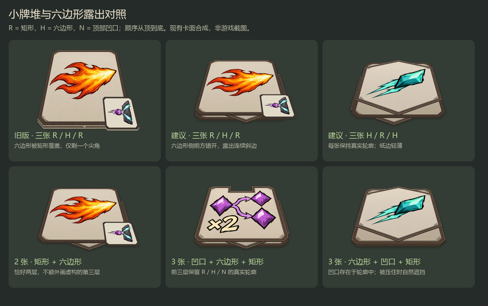
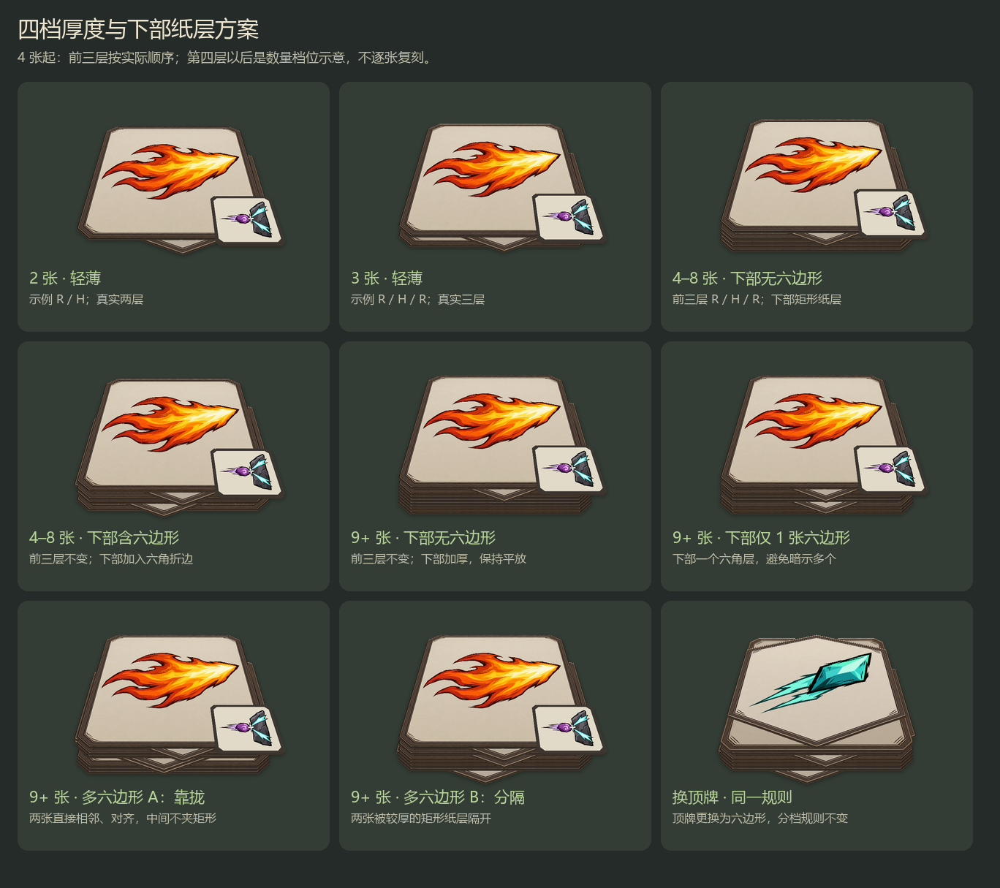
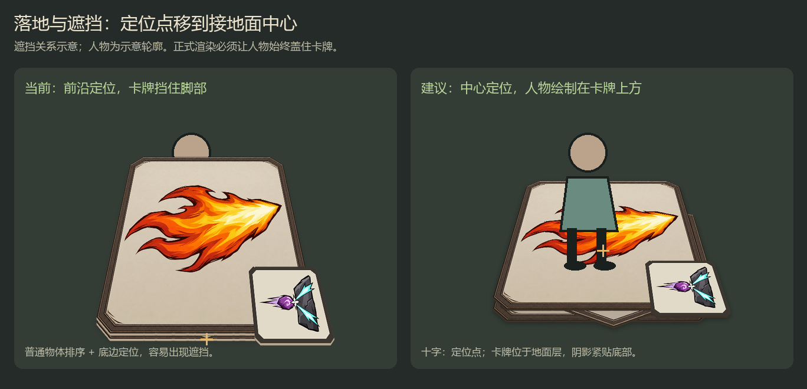

复用现有已确认主图，脚本合成。未修改或安装游戏资源。小牌堆逐层真实；大牌堆前三层真实，下部按数量和六边形分布简化。固定随机外观，避免刷新跳变。
落地实现建议：采用地面绘制层，定位点移至接地面中心；现有贴图已经透视，不能再直接套一次地面投影。拾取范围与定位同步检查。前三张保留矩形、六边形、凹口的真实轮廓，下面只做纸层示意；被遮挡的凹口不强行露出。第四张起统计六边形：4–8 张分无／有，9 张起分无／1 张／多张；多张的靠拢与分隔样式由服务器选择并保存，不在刷新时重抽。正式接入时保持下部连续纸边，不因模板改变真实容器顺序或数量。


